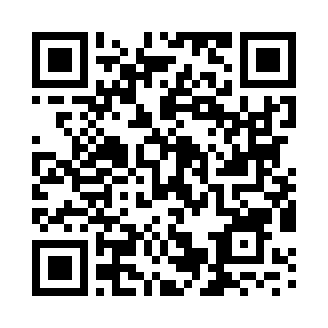

Aplicacion Android BondisUTN
Con BondisUTN podés entrar a consultar todos los horarios de todas las líneas de colectivos urbanos que pasan por la UTN de Villa María y todos los mapas de los recorridos.
Además, podés indicar en qué lugar estás y obtener cuánto falta para el próximo colectivo y de qué línea es.

Instructivo Instalación
Para instalar correctamente la aplicación deben entrar en la configuración de su dispositivo android:"Ajustes", luego a "Seguridad" (o aplicaciones) y tildar la opción orígenes desconocidos.
Después descargarla e instalarla.
Escanear con aplicacion QR Droid que se encuentra en google play
Descargar